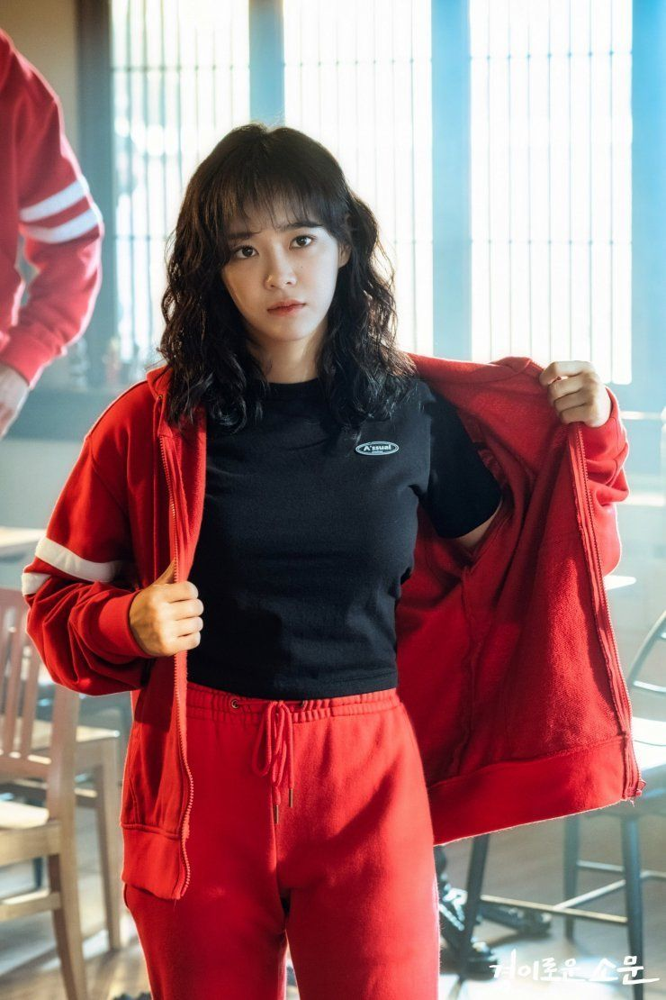

Cô là một thành viên của đội Bộ đếm và làm việc tại Quán Mì của Chị. Ha-na có tính cách đặc biệt và cô ghét những ai chạm vào người cô. Cô hôn mê sau khi bị đầu độc cùng với em gái mình. Cô trở thành một Counter khi bị chiếm hữu bởi đối tác Yung của mình là Woo-sik. Là một Counter, cô ấy có khả năng cảm nhận được những linh hồn ma quỷ xâm nhập Lãnh địa từ cách xa hàng trăm km. Cô cũng sở hữu sức mạnh tâm lý vượt trội hơn so với những người đồng đội của mình, cho phép cô đọc được ký ức từ nhiều năm trước và nhập những ký ức này như thể trong một thế giới vật chất.
